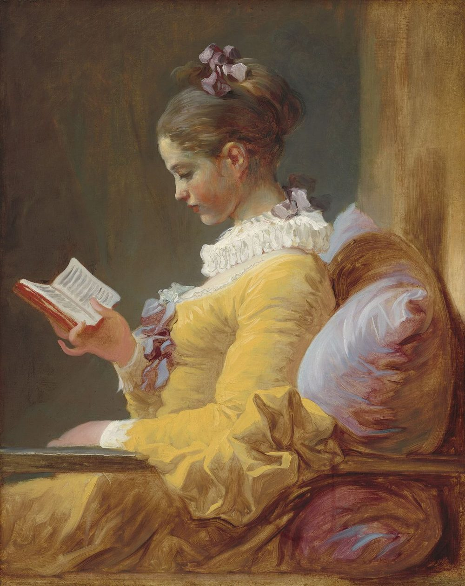
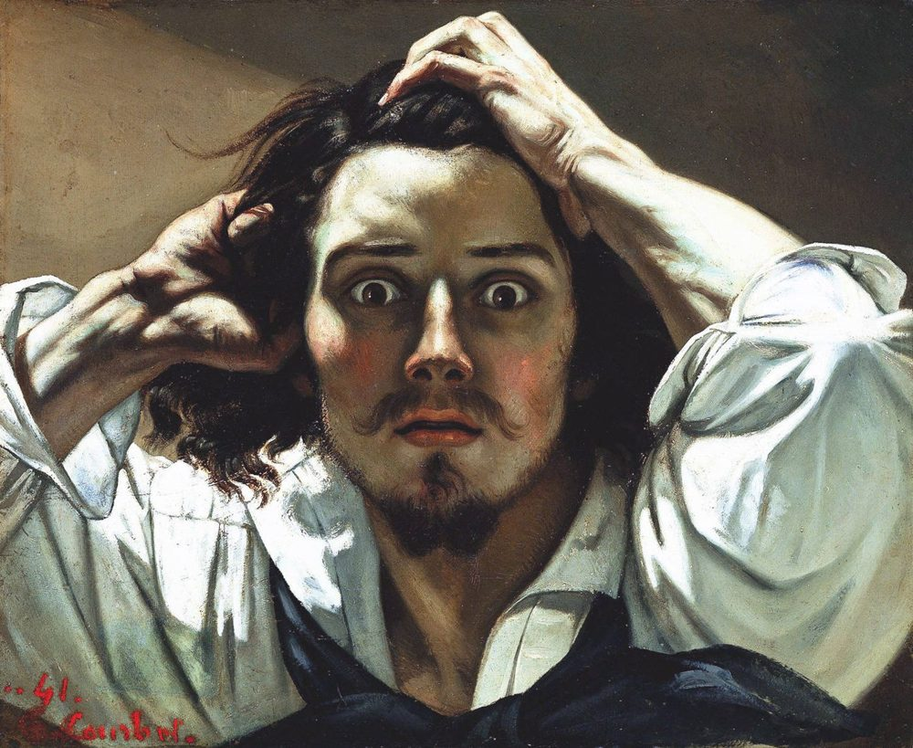
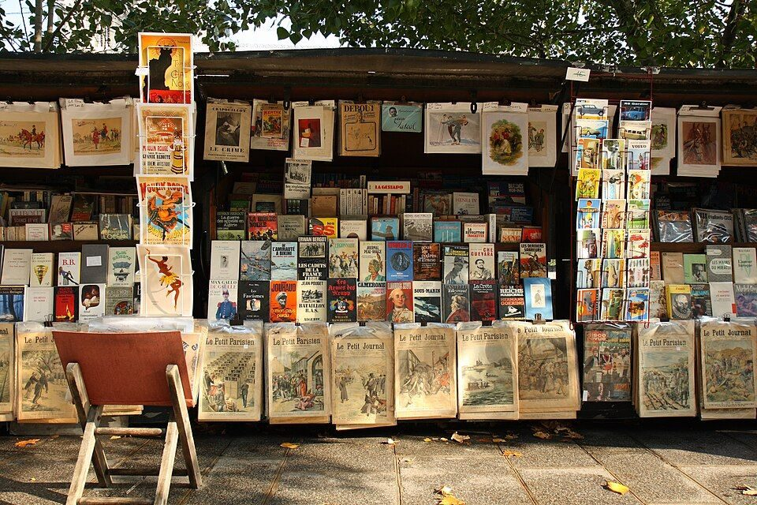
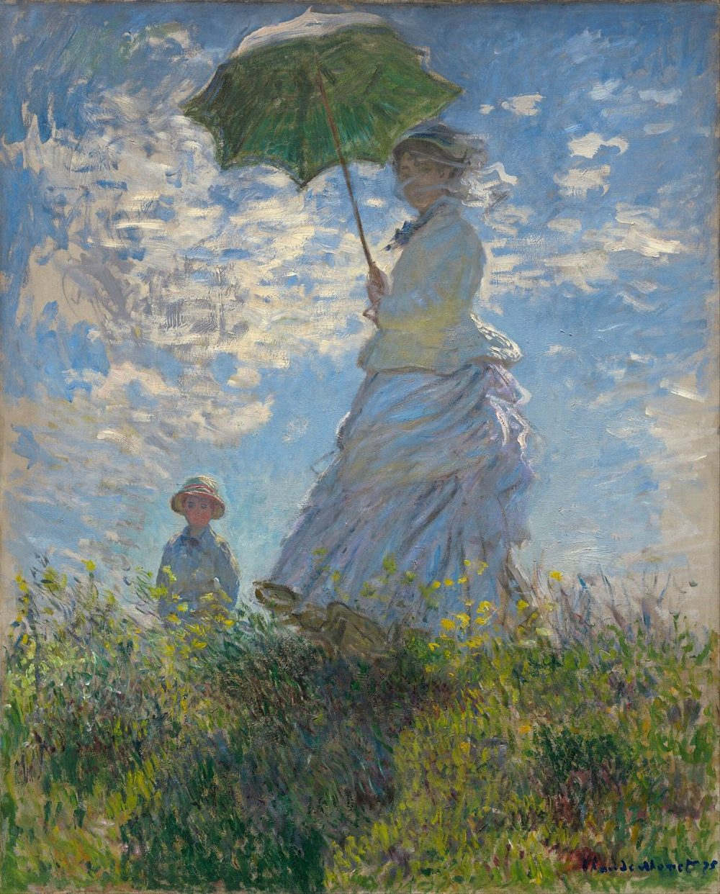
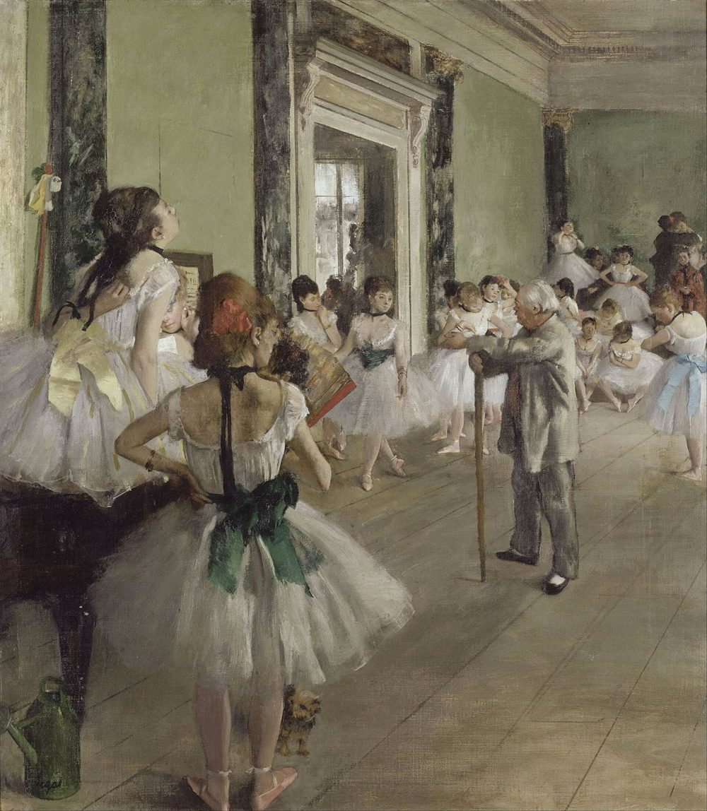
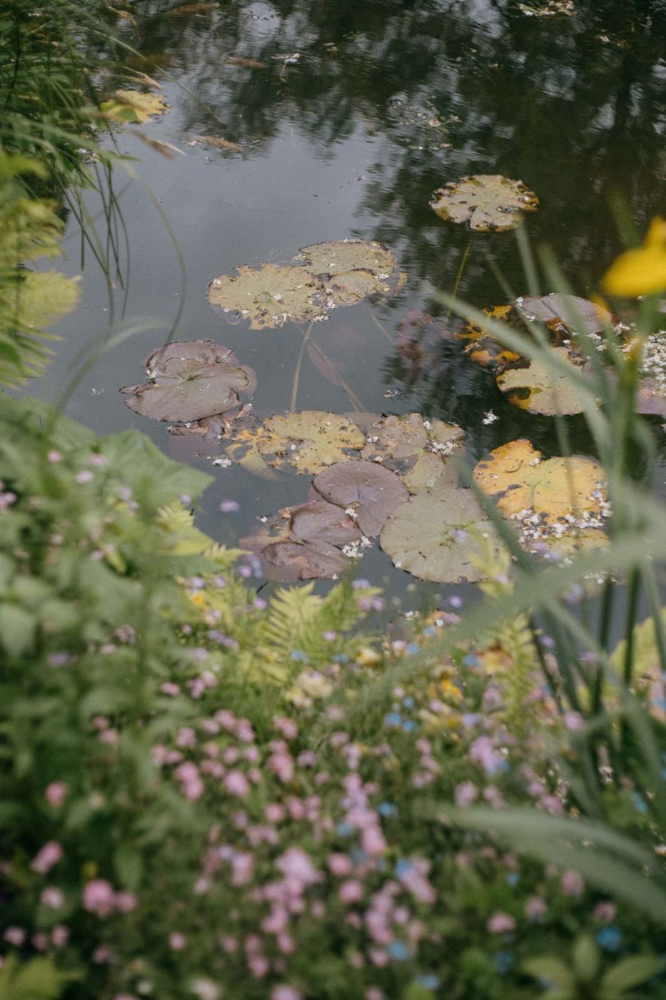
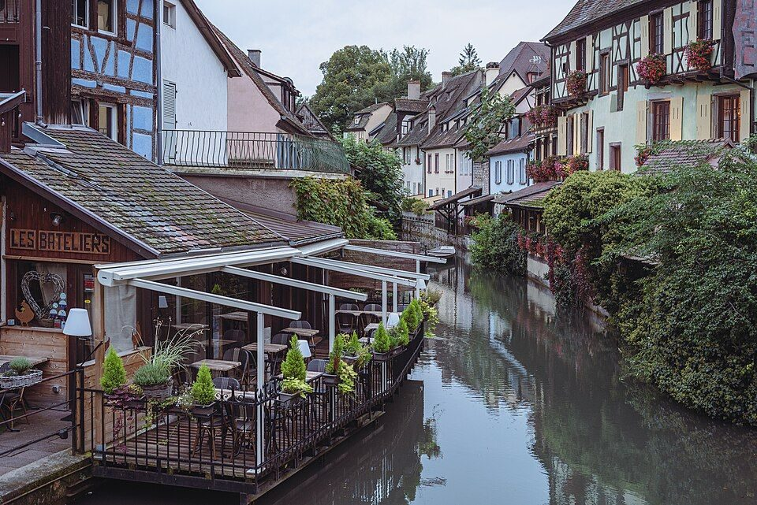
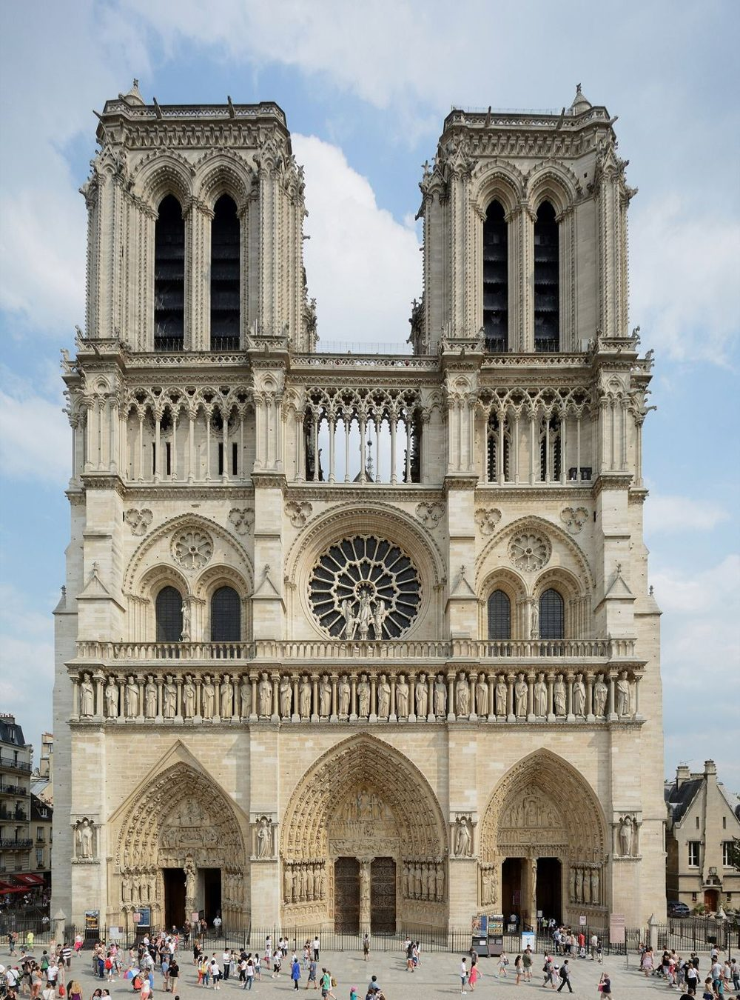
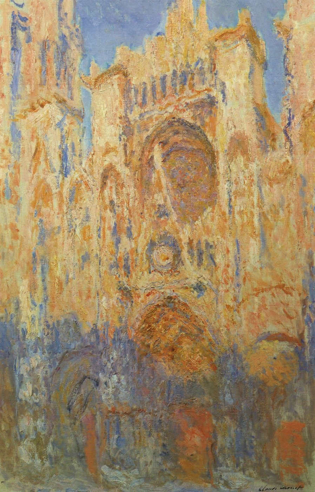

Vocabulaire et expressions
Vocabulary and expressionsClique sur une carte pour la retourner : au verso, la traduction, la définition, les exemples et une note. Click a card to flip it: on the back, the translation, the definition, examples and a note.

J'ai commencé à apprendre le français pour lire Proust dans le texte.
I started learning French so I could read Proust in the original.
Les mécontentements des habitants ont poussé la mairie à revoir son projet.
The residents' grievances pushed the town council to rethink its project.Tu as tout avantage à réserver ta visite du Louvre en ligne.
You'd be well advised to book your visit to the Louvre online.Il y a un réel avantage à utiliser le français chaque jour, même cinq minutes.
There's a real advantage in using French every day, even for five minutes.
Ma grand-mère est très à la page : elle connaît toutes les expositions du moment.
My grandmother is really up to date: she knows all the current exhibitions.
Au XIXe siècle, les ombrelles étaient très à la mode chez les Parisiennes.
In the 19th century, parasols were very fashionable among Parisian women.Le chiot descend prudemment les marches du jardin.
The puppy carefully goes down the garden steps.
Degas compose des tableaux parfaitement équilibrés, malgré des cadrages audacieux.
Degas composes perfectly balanced paintings, despite bold framing.Elle mène une vie équilibrée entre le travail, le sport et les amis.
She leads a balanced life between work, sport and friends.
Pour progresser, rien ne vaut un séjour où l'on s'immerge dans la langue.
To make progress, nothing beats a stay where you immerse yourself in the language.Dans les jardins de Giverny, on s'immerge dans l'univers de Monet.
In the gardens at Giverny, you immerse yourself in Monet's world.Écrit « e », prononcé « a »
Spelt « e », pronounced « a »Les adverbes formés sur un adjectif en -ent s'écrivent -emment ; ceux formés sur un adjectif en -ant s'écrivent -amment. À l'oral, c'est exactement le même son : [amɑ̃].Adverbs built on an adjective ending in -ent are spelt -emment; those built on an adjective in -ant are spelt -amment. Spoken, it's exactly the same sound: [amɑ̃].
-ent → -emment
- prudent→prudemment
- évident→évidemment
- récent→récemment
- fréquent→fréquemment
- patient→patiemment
- intelligent→intelligemment
- différent→différemment
- apparent→apparemment
- conscient→consciemment
- violent→violemment
-ant → -amment
- courant→couramment
- brillant→brillamment
- élégant→élégamment
- constant→constamment
- abondant→abondamment
- puissant→puissamment
Évidemment, elle parle couramment l'espagnol.
Obviously, she speaks Spanish fluently.Apparemment, le musée ferme plus tôt le lundi.
Apparently, the museum closes earlier on Mondays.Récemment, j'ai appris à attendre patiemment.
Recently, I've learnt to wait patiently.Le subjonctif et les locutions conjonctives
The subjunctive and conjunctionsLe subjonctif en un coup d'œil
The subjunctive at a glanceSubjonctif présent
present subjunctiveRadical de ils au présent + -e, -es, -e, -ions, -iez, -ent
ils finissent → que je finisse · ils prennent → que je prenne
Nous et vous : comme l'imparfait → que nous prenions, que vous preniez
Stem of « ils » in the present + endings. Nous and vous: like the imperfect.Subjonctif passé
past subjunctiveavoir / être au subjonctif + participe passé
que j'aie fini · qu'elle soit partie · que nous nous soyons immergés
Avoir or être in the subjunctive + past participle. Same agreement rules as the passé composé.Les irréguliers à connaître par cœur
The irregular forms to know by heartLes locutions qui exigent le subjonctif
Conjunctions that require the subjunctiveLe but et la crainte
Purpose and fearOn vise un résultat qui n'existe pas encore, ou on veut éviter un risque.You aim at a result that doesn't exist yet, or you want to avoid a risk.
Le guide parle lentement pour que tous les visiteurs le comprennent.
The guide speaks slowly so that all the visitors understand him.Le musée a installé des bancs afin que chacun puisse contempler les Nymphéas.
The museum has put in benches so that everyone can contemplate the Water Lilies.Accroche le tableau de manière qu'il soit bien éclairé.
Hang the painting so that it's well lit.Je tiens la laisse de peur que le chien ne s'échappe.
I'm holding the lead for fear the dog might run off.La limite dans le temps
A limit in timeL'action de la subordonnée n'a pas encore eu lieu : elle reste une perspective.The action in the clause hasn't happened yet: it's still a prospect.
Rentrons avant qu'il ne pleuve.
Let's go home before it rains.Elle restera devant ce Monet jusqu'à ce que le gardien la fasse sortir.
She'll stay in front of this Monet until the attendant makes her leave.En attendant que la galerie ouvre, nous prenons un café sur la place.
While we wait for the gallery to open, we're having a coffee in the square.D'ici que les travaux soient finis, l'exposition sera terminée.
By the time the work is finished, the exhibition will be over.La concession et l'exclusion
Concession and exclusionOn admet un fait qui ne change pas la conclusion, ou on écarte une idée.You acknowledge a fact that doesn't change the conclusion, or you rule out an idea.
Bien qu'elle vive en Andalousie, elle passe ses étés en Bretagne.
Although she lives in Andalusia, she spends her summers in Brittany.Quoique ce tableau soit petit, il attire tous les regards.
Although this painting is small, it draws everyone's eye.Il est parti sans que personne s'en aperçoive.
He left without anyone noticing.Ce n'est pas que je n'aime pas l'art contemporain, mais je préfère les impressionnistes.
It's not that I don't like contemporary art, but I prefer the Impressionists.Le film est réussi, encore que la fin soit un peu longue.
The film is good, although the ending is a bit long.La condition et l'hypothèse
Condition and hypothesisLa réalisation dépend d'une condition, d'une exception ou d'une supposition.Whether it happens depends on a condition, an exception or an assumption.
Tu peux venir avec ton chien, à condition qu'il soit tenu en laisse.
You can come with your dog, provided it's kept on a lead.Je viendrai, pourvu que je finisse à temps.
I'll come, as long as I finish in time.Nous irons à Arles, à moins qu'il n'y ait une grève des trains.
We'll go to Arles, unless there's a train strike.Pour peu qu'on lui parle de peinture, elle s'anime.
Mention painting to her, even in passing, and she comes alive.À supposer que le musée soit fermé, que ferions-nous ?
Supposing the museum were closed, what would we do?Pourvu que : deux emplois
Pourvu que: two usesJe viendrai, pourvu que je finisse à temps.
I'll come, as long as I finish in time.Pourvu qu'il fasse beau dimanche !
Let's hope it's sunny on Sunday!Au milieu de la phrase : une condition. Seul, en début de phrase : un souhait.In the middle of a sentence: a condition. On its own, at the start: a wish.
Les tournures « peu importe »
« No matter » structuresOn envisage toutes les possibilités : la conclusion reste la même.You consider every possibility: the conclusion stays the same.
Où que tu ailles en France, tu trouveras une boulangerie.
Wherever you go in France, you'll find a bakery.Quoi que tu dises, je reste persuadée que Matisse est un génie.
Whatever you say, I'm still convinced Matisse is a genius.Quelle que soit la saison, la Camargue est magnifique.
Whatever the season, the Camargue is magnificent.Qui que vous soyez, vous serez bien accueilli.
Whoever you are, you'll be made welcome.Si célèbre que soit ce tableau, il reste mystérieux.
However famous this painting is, it remains mysterious.Quoique ou quoi que ?
Quoique or quoi que?Quoique la salle soit pleine, on entend le guide.
Although the room is full, you can hear the guide.Quoi que tu choisisses, ce sera un beau souvenir.
Whatever you choose, it'll be a lovely memory.quoique en un mot = bien que · quoi que en deux mots = peu importe ce quequoique in one word = although · quoi que in two words = whatever
Quel que s'accorde avec le sujet de être : quel que soit le prix, quelle que soit l'heure, quels que soient tes goûts, quelles que soient tes raisons.Quel que agrees with the subject of être.
Quelle locution ?
Which conjunction?Choisis la locution qui donne le sens juste. Choose the conjunction that gives the right meaning.
Je te prête mon appareil photo ___ tu me le rendes demain.
I'll lend you my camera provided you give it back tomorrow.___ il fasse froid, nous déjeunons en terrasse.
Although it's cold, we're having lunch outside.Le chien aboie ___ son maître revienne.
The dog barks until its owner comes back.Parlez plus fort ___ tout le monde vous entende.
Speak louder so that everyone can hear you.Nous irons au pont du Gard, ___ il ne pleuve.
We'll go to the Pont du Gard, unless it rains.___ soient tes goûts, tu trouveras à Paris un musée qui te plaira.
Whatever your tastes, you'll find a museum you like in Paris.Elle a quitté la galerie ___ personne la remarque.
She left the gallery without anyone noticing her.___ on lui montre un Cézanne, il oublie l'heure.
Show him a Cézanne, even briefly, and he loses track of time.J'ai réservé deux semaines à l'avance ___ le restaurant ne soit complet.
I booked two weeks ahead for fear the restaurant would be full.___ tu ailles en Provence en juillet, tu verras des champs de lavande.
Wherever you go in Provence in July, you'll see lavender fields.

Indicatif ou subjonctif ?
Indicative or subjunctive?+ indicatif
+ indicative+ subjonctif
+ subjunctiveLes paires à bien distinguer
Pairs to tell apartAprès que le musée a fermé, nous sommes allés dîner.
After the museum closed, we went to dinner.Avant que le musée ferme, nous voulons voir la salle Monet.
Before the museum closes, we want to see the Monet room.après que : l'action a eu lieu → indicatif · avant que : elle n'a pas encore eu lieu → subjonctif
Même s'il pleut, je sortirai le chien.
Even if it rains, I'll take the dog out.Bien qu'il pleuve, je sors le chien.
Although it's raining, I'm taking the dog out.même si + indicatif · bien que + subjonctif : le sens est proche, le mode change
Elle a beaucoup pratiqué, si bien qu'elle parle couramment.
She practised a lot, so she speaks fluently.Elle pratique beaucoup pour qu'on la comprenne partout.
She practises a lot so that people understand her everywhere.si bien que : une conséquence réelle · pour que : un but
J'ai attendu jusqu'au moment où le gardien est arrivé.
I waited until the moment the attendant arrived.J'attendrai jusqu'à ce que le gardien arrive.
I'll wait until the attendant arrives.jusqu'au moment où + indicatif · jusqu'à ce que + subjonctif
Le « ne » explétif
The expletive « ne »Partons avant que la foule n'arrive.
Let's leave before the crowd arrives.Elle a pris un parapluie de peur qu'il ne pleuve.
She took an umbrella in case it rained.Nous visiterons Èze, à moins que le vent ne soit trop fort.
We'll visit Èze, unless the wind is too strong.Comparez
CompareJ'ai peur qu'il ne pleuve.
I'm afraid it will rain.J'ai peur qu'il ne pleuve pas.
I'm afraid it won't rain.Avec pas, la phrase devient vraiment négative. Après sans que, bien que et pour que, on ne met pas de ne explétif.With « pas », the sentence really becomes negative. After sans que, bien que and pour que, no expletive ne.
Indicatif ou subjonctif ?
Indicative or subjunctive?Choisis la forme correcte du verbe. Choose the correct form of the verb.
Après que le guide ___ sa visite, les enfants posent leurs questions.
After the guide has finished the tour, the children ask their questions.Avant que le guide ___ la parole, les enfants posent déjà des questions.
Before the guide starts speaking, the children are already asking questions.Même si le billet ___ cher, l'exposition vaut le détour.
Even if the ticket is expensive, the exhibition is worth the trip.Bien que le billet ___ cher, l'exposition vaut le détour.
Although the ticket is expensive, the exhibition is worth the trip.Il a plu toute la journée, si bien que nous ___ restés au musée.
It rained all day, so we stayed in the museum.Je garderai ton chien jusqu'à ce que tu ___ de vacances.
I'll look after your dog until you come back from holiday.Pendant que tu ___ les courses, je sors le chien.
While you do the shopping, I'll take the dog out.Depuis qu'elle ___ en Andalousie, elle peint tous les jours.
Since she's been living in Andalusia, she paints every day.Partons tôt, de crainte que la route ne ___ bloquée.
Let's leave early, in case the road is blocked.Elle a pris son parapluie de peur qu'il ___.
She took her umbrella in case it rained.
Même sujet ? Passe à l'infinitif
Same subject? Use the infinitive| pour que | → | pour + infinitif |
| afin que | → | afin de + infinitif |
| avant que | → | avant de + infinitif |
| sans que | → | sans + infinitif |
| de peur que | → | de peur de + infinitif |
| de crainte que | → | de crainte de + infinitif |
| à condition que | → | à condition de + infinitif |
| à moins que | → | à moins de + infinitif |
| en attendant que | → | en attendant de + infinitif |
Pas d'infinitif possible avec bien que, jusqu'à ce que, pourvu que : on garde le subjonctif, ou on choisit une autre tournure (bien que fatiguée, tout en étant fatiguée).No infinitive possible with bien que, jusqu'à ce que, pourvu que: keep the subjunctive or rephrase.
Je révise pour progresser.
I'm revising to improve.Je révise avec toi pour que tu progresses.
I'm revising with you so that you improve.Visite le musée avant de rentrer.
Visit the museum before going home.Visite le musée avant qu'il ne ferme.
Visit the museum before it closes.Elle est partie sans dire au revoir.
She left without saying goodbye.Elle est partie sans que nous puissions lui dire au revoir.
She left without us being able to say goodbye.Relie les deux phrases
Join the two sentencesUtilise la locution indiquée. Attention : même sujet → infinitif ; deux sujets → que + subjonctif. Use the conjunction given. Careful: same subject → infinitive; two subjects → que + subjunctive.
J'économise. + Je voyagerai à Paris. pour
I'm saving so I can travel to Paris.J'économise. + Ma fille voyagera à Paris. pour
I'm saving so that my daughter can travel to Paris.Elle est partie. + Elle n'a pas dit au revoir. sans
She left without saying goodbye.Elle est partie. + Nous ne l'avons pas vue. sans
She left without us seeing her.Range tes pinceaux. + Tu sors. avant
Put your brushes away before you go out.Range tes pinceaux. + Le chien va les mâchouiller ! avant
Put your brushes away before the dog chews them!
Le subjonctif passé avec les locutions
The past subjunctive with conjunctionsBien qu'elle ait commencé à apprendre le français il y a deux ans seulement, elle s'exprime avec aisance.
Although she only started learning French two years ago, she expresses herself with ease.Je ne partirai pas avant que tu aies vu le Monet de l'Orangerie.
I won't leave before you've seen the Monet at the Orangerie.Je te prête mon livre, à condition que tu l'aies fini avant samedi.
I'll lend you my book, provided you've finished it by Saturday.Personne n'a osé parler jusqu'à ce que le conférencier soit parti.
Nobody dared speak until the lecturer had left.Conjugue au subjonctif
Conjugate in the subjunctiveÉcris le verbe au subjonctif présent ou passé, selon le sens. Write the verb in the present or past subjunctive, depending on the meaning.
Bien qu'elle (commencer) à apprendre le français il y a peu, elle lit déjà des romans.
Although she only started learning French recently, she's already reading novels.Partons maintenant, de façon que nous (pouvoir) voir l'exposition avant la foule.
Let's leave now so that we can see the exhibition before the crowds.Quoi que tu (faire) , fais-le avec passion.
Whatever you do, do it with passion.Je t'attendrai, à moins que tu ne (vouloir) partir sans moi.
I'll wait for you, unless you want to leave without me.Bien qu'ils (partir) tôt, ils sont arrivés après la fermeture.
Although they left early, they arrived after closing time.Où que nous (être) , nous trouvons toujours un café sympathique.
Wherever we are, we always find a nice café.Elle viendra, pourvu qu'on lui (permettre) d'amener son chien.
She'll come, provided she's allowed to bring her dog.Je ne partirai pas avant que tu (voir) les Nymphéas.
I won't leave before you've seen the Water Lilies.Quelle que (être) ton opinion, j'aimerais l'entendre.
Whatever your opinion, I'd like to hear it.Ce n'est pas qu'il (savoir) peu de choses, mais il parle sans réfléchir.
It's not that he knows little, but he speaks without thinking.
Adopter un chien : tes conditions
Adopting a dog: your conditionsTu veux adopter un chien dans un refuge. Explique tes conditions, tes craintes et tes projets en utilisant au moins cinq locutions de la leçon.
You want to adopt a dog from a shelter. Explain your conditions, your fears and your plans using at least five conjunctions from the lesson.J'adopterai ce chien à condition que le refuge me laisse le temps de le connaître, pourvu qu'il s'entende avec les chats du quartier, et à moins qu'il ne soit trop grand pour mon appartement. Avant qu'il n'arrive, j'aménagerai le jardin pour qu'il s'y sente bien.
I'll adopt this dog provided the shelter gives me time to get to know it, as long as it gets on with the neighbourhood cats, and unless it's too big for my flat. Before it arrives, I'll set up the garden so that it feels at home there.Mémorise le vocabulaire
Memorise the vocabularyComplète avec le bon mot
Fill in with the right wordChoisis dans la banque de mots et écris-le dans la phrase. Pick from the word bank and type it into the sentence.
Les des visiteurs ont obligé le musée à prolonger ses horaires.
The visitors' grievances forced the museum to extend its opening hours.Mon oncle a peindre à soixante ans.
My uncle started painting at sixty.Tu as tout visiter Versailles en semaine.
You'd be well advised to visit Versailles on a weekday.Elle lit trois journaux par jour : elle est toujours .
She reads three newspapers a day: she's always up to date.Les sacs en raphia sont très cet été.
Raffia bags are very fashionable this summer.Conduis : la route de montagne est glissante.
Drive carefully: the mountain road is slippery.Une alimentation est essentielle pour la santé.
A balanced diet is essential for your health.Pour bien apprendre une langue, il faut dans la culture du pays.
To learn a language well, you need to immerse yourself in the country's culture.
Sens et prononciation
Meaning and pronunciationChoisis la bonne réponse. Choose the right answer.
Quel adverbe ne se prononce pas [amɑ̃] ?
Lentement is pronounced [lɑ̃tmɑ̃]: it comes from lent, with no -emment.Adverbe formé sur « fréquent » :
Frequent → frequently.Adverbe formé sur « élégant » :
Elegant → elegantly.Quel mot signifie « se plonger complètement dans un milieu » ?
S'immerger: to plunge completely into an environment.Elle connaît toutes les nouveautés : elle est…
She knows everything that's new: she's up to date.« Tu as tout avantage à partir tôt » signifie :
You'd be well advised to leave early.
Conjugaison : tous les temps
Conjugation: all the tensesUne lettre de Lyon
A letter from LyonAide-mémoire des temps
Tense reminderdécor, habitude, description dans le passé
setting, habit, description in the pastLe dimanche, nous flânions sur les quais.
action ponctuelle et terminée
a one-off, completed actionElle a visité le musée d'Orsay hier.
action antérieure à une autre action passée
an action before another past actionIl avait déjà vu ce tableau à Madrid.
projet, action à venir ; après « dès que, quand » au futur
plan, future action; after « dès que, quand » in the futureNous partirons dès que tu seras prête.
action future terminée avant une autre
a future action completed before anotherQuand tu auras fini, nous sortirons le chien.
conséquence d'une hypothèse : si + imparfait
result of a hypothesis: si + imperfectSi j'avais un jardin, j'adopterais un chien.
regret : si + plus-que-parfait
regret: si + pluperfectSi nous étions partis plus tôt, nous aurions vu le coucher de soleil.
après une locution ou un verbe de volonté, de sentiment
after a conjunction or a verb of will, feelingIl faut que nous réservions nos billets.
action déjà accomplie, vue avec un subjonctif
a completed action, seen through a subjunctiveJe suis heureuse que tu sois venue.
Complète la lettre
Complete the letterConjugue chaque verbe au temps et au mode qui conviennent : indicatif, conditionnel ou subjonctif. Conjugate each verb in the right tense and mood: indicative, conditional or subjunctive.
Chère Inès,
Dear Inès,Je t'écris de Lyon, où je arriver avant-hier pour la fête des Lumières. Quand j'étais petite, ma mère me parler souvent de cette fête : elle y aller avec ses parents, bien avant ma naissance. Hier soir, des milliers de lumignons briller aux fenêtres et la basilique de Fourvière changer de couleur toutes les dix minutes.
I'm writing to you from Lyon, where I arrived the day before yesterday for the Festival of Lights. When I was little, my mother often talked to me about this festival: she had been there with her parents, long before I was born. Last night, thousands of candles were shining in the windows and the basilica of Fourvière changed colour every ten minutes.Bien que la foule être immense, tout est parfaitement organisé. Si tu être là, tu adorer les projections sur la cathédrale Saint-Jean ! Dommage que tu ne pas pouvoir venir. Si j'avais su que le spectacle était si beau, j'réserver une semaine entière.
Although the crowd is huge, everything is perfectly organised. If you were here, you'd love the projections on Saint-Jean cathedral! Shame you couldn't come. If I'd known the show was so beautiful, I'd have booked a whole week.Demain, je visiter le musée des Beaux-Arts. Quand je l'voir, je t'enverrai mes photos préférées. Il faut absolument que tu venir l'année prochaine, à condition que ton chien accepter le train ! Je te réserverai une chambre dès que je connaître les dates.
Tomorrow, I'll visit the Museum of Fine Arts. When I've seen it, I'll send you my favourite photos. You absolutely must come next year, provided your dog agrees to take the train! I'll book you a room as soon as I know the dates.Je t'embrasse, et à très vite, avant que l'hiver ne finir !
Love, and see you very soon, before the winter is over!Traduction : de l'anglais au français
Translation: from English into French
Traduis en français
Translate into FrenchTraduis chaque phrase
Translate each sentenceÉcris ta traduction, puis affiche la correction et indique si ta phrase était juste. Write your translation, then show the answer and say whether your sentence was right.
I started learning French so that I could read Camus in the original.
J'ai commencé à apprendre le français pour pouvoir lire Camus dans le texte.
Même sujet : pour + infinitif.
Ma traduction était :Although the museum is free on Sundays, there are few visitors in winter.
Bien que le musée soit gratuit le dimanche, il y a peu de visiteurs en hiver.
Aussi : Quoique le musée soit gratuit…
Ma traduction était :Whatever you think, this painting is a masterpiece.
Quoi que tu penses, ce tableau est un chef-d'œuvre.
Quoi que (en deux mots) = peu importe ce que.
Ma traduction était :Walk the dog carefully until the vet calls you.
Promène le chien prudemment jusqu'à ce que le vétérinaire t'appelle.
Jusqu'à ce que + subjonctif.
Ma traduction était :You'd be well advised to immerse yourself in the language before leaving for Paris.
Tu as tout avantage à t'immerger dans la langue avant de partir pour Paris.
Même sujet : avant de + infinitif.
Ma traduction était :I'll come with you to the exhibition, unless it rains.
Je t'accompagnerai à l'exposition, à moins qu'il ne pleuve.
Le ne explétif est facultatif.
Ma traduction était :The residents' discontent grew without the mayor noticing.
Le mécontentement des habitants a grandi sans que le maire s'en aperçoive.
Sans que + subjonctif, sans ne.
Ma traduction était :She is always up to date, but she never follows fashion.
Elle est toujours à la page, mais elle ne suit jamais la mode.
Aussi : … mais elle ne cherche jamais à être à la mode.
Ma traduction était :However talented he may be, he will have to wait until the gallery has accepted his work.
Si talentueux qu'il soit, il devra attendre que la galerie ait accepté son travail.
Aussi : Aussi talentueux qu'il soit… / … jusqu'à ce que la galerie ait accepté son travail.
Ma traduction était :
À toi d'écrire : une réflexion
Your turn to write: a reflection
Petit essai
Short essayChoisis un des deux sujets et écris un texte argumenté d'environ 250 mots.
Choose one of the two topics and write a reasoned text of about 250 words.Pour trouver tes idées
To find your ideas- A · Une œuvre « laide » peut-elle émouvoir ? Pense à un exemple précis.
- La beauté est-elle la même pour tout le monde, à toutes les époques ?
- Qu'est-ce qui nous touche vraiment : la forme, l'histoire, la sincérité de l'artiste ?
- B · Ta voix, tes gestes, ton humour changent-ils quand tu passes d'une langue à l'autre ?
- Une langue transporte-t-elle une façon de voir le monde ?
- Reste-t-on soi-même, enrichi, ou devient-on vraiment un autre ?
Organise ton texte
Organise your text- Introduction (3-4 lignes) · une accroche (une œuvre, une anecdote), puis la question reformulée, puis l'annonce du plan.On pourrait croire que… Pourtant… Il convient donc de se demander si…
- Première partie (5-6 lignes) · la thèse la plus évidente, avec un exemple.Certes, … · Il est vrai que… · Prenons l'exemple de…
- Deuxième partie (5-6 lignes) · la nuance ou l'idée opposée, avec un exemple.Cependant, … · Ce n'est pas que…, mais… · Bien que…, …
- Conclusion (3 lignes) · ta réponse personnelle et une ouverture.En somme, … · Pour ma part, … · Reste à savoir si…
0 mots
On pourrait croire que l'art a pour mission de nous offrir la beauté. Pourtant, face au Désespéré de Courbet, ce n'est pas l'harmonie qui nous saisit, mais une angoisse presque physique. Faut-il donc qu'une œuvre soit belle pour qu'elle nous touche, ou bien l'émotion naît-elle ailleurs ?
One might think art's mission is to offer us beauty. Yet in front of Courbet's Desperate Man, it isn't harmony that grips us but an almost physical anxiety. So does a work have to be beautiful to move us, or does emotion come from somewhere else?À revoir
To reviewLes points à revoir apparaîtront ici au fur et à mesure de tes réponses. The points to review will appear here as you answer.